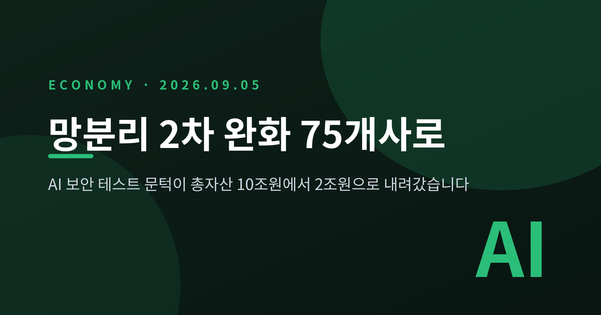
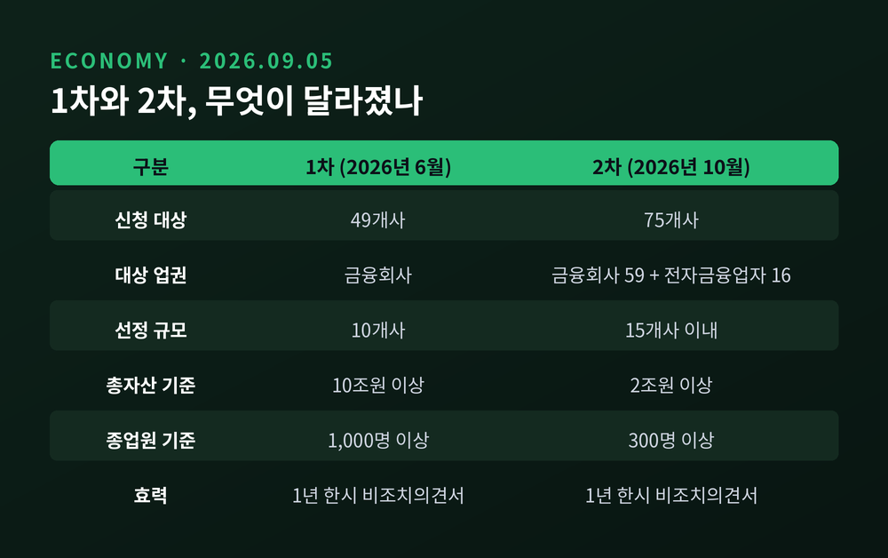
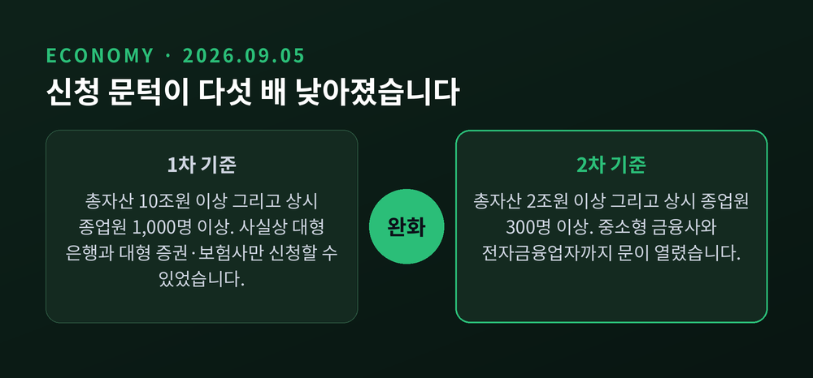
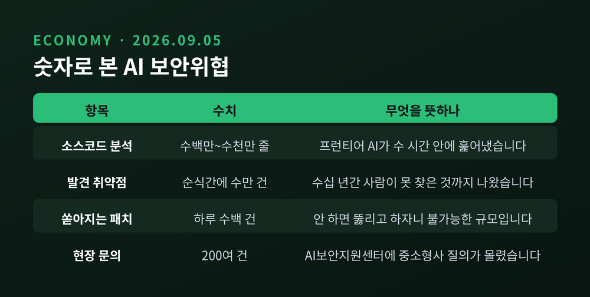
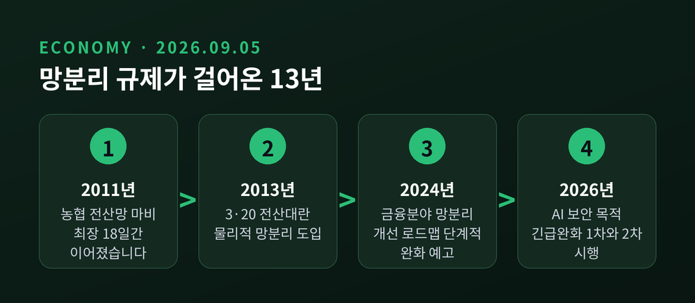
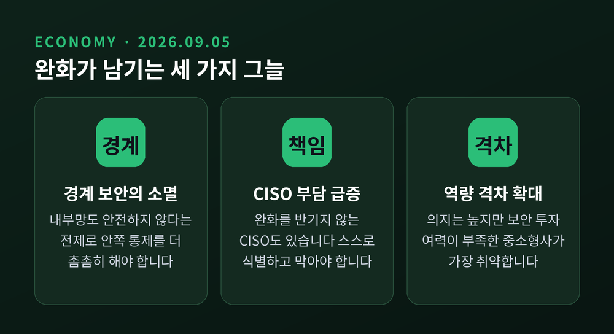
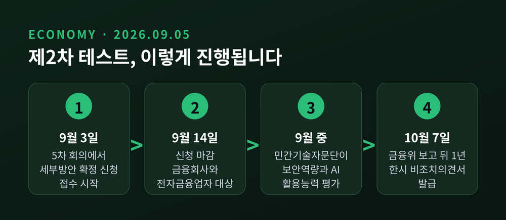

망분리 규제 2차 완화 확정, 금융사 75곳에 AI 보안 테스트 열립니다

이번 글에서는 금융위원회가 2026년 9월 3일 확정한 제2차 망분리 규제 긴급완화 조치를 정리해 보겠습니다. 신청 대상이 49개사에서 75개사로 늘었고, 선정 규모도 10곳에서 15곳으로 커졌습니다. 숫자보다 눈여겨볼 것은 이 조치가 놓인 자리입니다.
9월 3일에 확정된 내용
금융위원회는 9월 3일 유영준 디지털금융정책관 주재로 '프런티어 AI 상황대응반' 제5차 회의를 열었습니다. 금융감독원과 금융보안원이 함께한 자리였습니다. 여기서 '제2차 망분리 규제 긴급완화 조치' 세부방안이 확정됐습니다.
핵심은 참여 문호를 넓힌 것입니다. 1차 때 49개사였던 신청 대상이 75개사로 늘었습니다. 금융회사 59곳과 전자금융업자 16곳을 합한 숫자입니다. 최종 선정 규모는 10개사에서 15개사 이내로 확대됩니다.
신청은 9월 14일까지 받습니다. 9월 중 민간기술자문단 등이 보안역량과 AI 활용능력을 평가하고, 10월 7일 금융위원회 보고를 거쳐 결과가 확정됩니다. 선정된 회사에는 1년 한시의 비조치의견서가 발급됩니다.
규제를 개정하는 것이 아니라는 점이 중요합니다. 조문은 그대로 두고, 선정된 회사에 한해 "이 행위는 문제 삼지 않겠다"는 의견서를 발급하는 방식입니다. 기한이 지나면 원칙으로 되돌아갑니다.

문턱이 다섯 배 낮아졌습니다
가장 눈에 띄는 변화는 신청 자격입니다.
1차에서는 총자산 10조원 이상이면서 상시 종업원이 1,000명 이상인 회사만 신청할 수 있었습니다. 사실상 대형 은행과 대형 증권·보험사의 무대였습니다. 2차에서는 총자산 2조원 이상, 상시 종업원 300명 이상으로 기준이 내려갔습니다. 자산 기준으로는 다섯 배가 낮아진 셈입니다.
전자금융업자에게는 별도 기준이 적용됩니다. 연간 전자금융거래 금액이 2조원 이상이면서, 전자금융업 관련 매출이 전체 매출의 10%를 넘어야 합니다. 금융회사와 같은 잣대를 들이대면 신청 기회 자체가 생기지 않는 점을 감안한 조정입니다.
다만 완화만 있는 것은 아닙니다. 금융회사와 전자금융업자 모두 정보보호최고책임자(CISO)가 다른 정보기술부문 업무를 겸직하지 않아야 합니다. 정보보호의 책임성과 독립성을 확보하기 위한 장치입니다. 이 요건 때문에 실제 자격을 갖춘 곳은 금융회사 59곳, 전자금융업자 16곳으로 좁혀졌습니다.

막으려고 만든 규제를, 막기 위해 풉니다
이 조치의 논리는 조금 낯설게 들립니다.
망분리는 해킹을 막으려고 세운 규제입니다. 그런데 이번에는 해킹을 막기 위해 그 규제를 푸는 구조입니다. 공격에 AI가 쓰이기 시작했으니, 방어에도 AI를 써야 한다는 판단이 깔려 있습니다.
계기는 2026년 4월 공개된 프런티어 AI 모델 '미토스'였습니다. 고성능 AI가 기존 보안 시스템을 단시간에 무너뜨릴 수 있다는 우려가 현실감을 얻었습니다. 금융보안원이 5월 27일 문을 연 AI보안지원센터에는 관련 문의가 200여 건 접수됐습니다. 자체 연구 조직을 갖춘 대형사보다 중소형사의 질문이 특히 몰렸다고 합니다.
가장 곤란했던 것은 패치 문제였습니다. AI로 오픈소스와 기존 소프트웨어의 취약점을 훑자 순식간에 수만 건이 쏟아졌습니다. 수십 년간 사람이 찾지 못한 취약점까지 드러났습니다. 취약점이 늘면 패치도 늘어납니다. 하루에 수백 건씩 쏟아지는 패치를 어디서부터 적용해야 하느냐는 물음 앞에서 금융사들은 막막해했습니다.
권대영 금융위 부위원장은 지난 5월 이 위협을 감기 바이러스에 빗댔습니다. 완전히 차단할 대상이 아니라 함께 살아가며 관리해야 할 위협이라는 뜻이었습니다.

2013년에 세운 벽
망분리 규제의 뿌리는 두 번의 전산대란입니다.
2011년 농협 전산망 마비가 첫 신호였습니다. 외주업체 직원이 서버 관리용 노트북으로 파일 공유 사이트를 이용하다 악성코드에 감염됐고, 그 여파가 전산망 서버까지 번졌습니다. 마비는 최장 18일간 이어졌습니다.
결정타는 2013년 3·20 전산대란이었습니다. 주요 방송사와 함께 농협·신한은행·제주은행·우리은행의 전산망이 공격받아 인터넷뱅킹과 ATM 이용이 멈췄습니다. 금융당국은 검사 끝에 5개 금융사에서 전산 보안 대책 부실 운용을 적발하고 임직원 23명을 제재했습니다.
이 사건을 계기로 물리적 망분리가 2013년 도입돼 2014년 말부터 금융권에 적용됐습니다. 회사별·업무별 사정을 가리지 않는 일률적 적용이었습니다.
완화 요구는 오래전부터 있었습니다. 핀테크 업계에서는 개발자들 사이에 "깃허브 없이 어떻게 일을 하냐"는 말이 나온다는 지적이 2021년에도 나왔습니다. 금융당국은 2024년 8월 '금융분야 망분리 개선 로드맵'을 내놓으며 단계적 개선을 예고했고, 2026년 4월에는 전자금융감독규정 시행세칙을 고쳐 별도 심사 없이 내부 업무망에서 SaaS를 쓸 수 있게 했습니다. 다만 고객 데이터를 다루는 생성형 AI는 여전히 규제 영역에 남아 있습니다.

1차 테스트가 남긴 성적표
지난 6월 시작한 1차 테스트에는 10개사가 선정됐습니다. 신한·하나·우리은행과 카카오뱅크, KB증권, NH투자증권, 삼성화재, 한화생명 등이 이름을 올렸습니다.
두 달여의 중간 점검 결과는 대체로 긍정적이었습니다. 프런티어 AI는 수백만에서 수천만 줄에 이르는 소스코드를 몇 시간 만에 분석해냈습니다. 기존 취약점을 누락 없이 일관되게 찾아내는 데 강점을 보였습니다. 다만 금융사들이 침입차단·방지 시스템을 함께 운용하고 있어, 발견된 취약점이 곧바로 침해사고로 이어질 가능성은 크지 않은 것으로 평가됐습니다.
금융보안원은 우수 사례로 네 가지를 꼽았습니다. 문이 열렸다고 전 직원·전 시스템에 한꺼번에 적용하는 대신 특정 영역에 최소한으로 구축한 뒤 단계적으로 넓힌 사례, 클라우드 침해사고에 특화된 매뉴얼을 따로 마련한 사례, 클라우드가 기본 제공하지 않는 보안 기능을 자체 구현한 사례, 계정관리 범위를 SaaS와 클라우드까지 묶어 한곳에서 관리한 사례입니다.
공통으로 아쉬웠던 대목도 있었습니다. 어떤 보안 SaaS가 왜 필요한지 스스로 따져보지 않고, 남들이 쓰니까 도입하는 경우가 눈에 띄었다는 지적입니다.
현장이 마냥 반기지는 않습니다
이 조치를 두고 금융보안 현장에서는 결이 다른 목소리도 나옵니다.
망분리 완화는 보안의 구조 자체를 바꿉니다. 예전에는 "여기까지가 내부망이니 이 안은 비교적 안전하다"는 경계 보안이 성립했습니다. 지금은 그 경계가 사라집니다. 내부망에도 공격자가 있을 수 있다는 전제 아래, 시스템을 잘게 나누고 내부의 움직임과 데이터 흐름을 모두 감시해야 합니다. 밖으로 나가는 길은 편해졌지만 안쪽의 통제는 오히려 촘촘해져야 한다는 뜻입니다.
부담은 CISO에게 쏠립니다. 김성웅 금융보안원 금융AI보안연구소장은 최근 인터뷰에서 망분리 완화를 원하지 않는 CISO도 있다고 전했습니다. 경계를 쳐서 걱정거리를 줄여놨는데 그것을 걷어내고 알아서 식별하고 막으라는 요구가 되기 때문입니다.
더 뾰족한 우려는 경영진의 계산입니다. 보안 업무를 AI로 자동화하면 인력과 예산을 얼마나 줄일 수 있을지부터 살피는 흐름이 감지된다는 지적이었습니다. 김 소장의 결론은 반대 방향이었습니다. 예측하기 어려운 새로운 위험이 생기는 국면인 만큼 보안 조직의 인력과 예산은 줄일 것이 아니라 늘려야 한다는 것입니다.
그가 가장 우려한 곳은 AI 도입 의지는 높지만 보안 투자 여력이 구조적으로 부족한 소규모 핀테크와 중소형 2금융권이었습니다. 공교롭게도 이번 2차 조치가 문을 넓힌 대상과 겹칩니다. 기회가 커진 만큼 위험도 함께 커지는 셈입니다.
금융당국도 이 점을 모르지 않습니다. 지난 5월 금융위 관계자는 망분리 규제를 "양날의 검"이라 표현하며, 모든 금융회사에 일괄 완화하는 것은 위험하다고 선을 그었습니다. 보안이 취약한 회사에 AI를 강화하라는 취지가 아니라, 역량을 갖춘 회사부터 성공 사례를 쌓게 하려는 것이라는 설명이었습니다.

다음 순서는 3차, 그리고 전면 해제
금융위는 3차 테스트의 시기와 규모를 조속히 확정할 계획입니다. 추가 차수를 더 운영할지, 아니면 상시 제도로 바꿀지도 검토 대상입니다.
1차 테스트가 끝나면 발견된 취약점 유형과 AI 점검 노하우, 보안 대응요령을 전 금융권에 공유하고 AI 가이드라인 개정에 착수합니다. 테스트에 참여하지 못한 회사도 대비할 수 있게 하겠다는 취지입니다.
더 큰 변화는 그다음에 놓여 있습니다. 유영준 정책관은 보안 목적에 한정하지 않고 AI를 다각적·상시적으로 활용할 수 있도록, 고도의 AI·보안역량을 갖춘 대상부터 망분리 규제를 전면 해제하는 방안을 관계기관과 논의 중이라고 밝혔습니다. 전면 해제가 이뤄지면 챗봇 상담, 자산관리, 여신심사, 기업금융, 내부통제까지 AI 활용 범위가 넓어집니다.
물론 아직은 논의 단계입니다. 시기도 대상도 정해지지 않았습니다. 이번 2차 조치가 15개사, 1년 한시라는 좁은 문에 머물러 있다는 사실도 함께 봐야 합니다.

끝으로 한 마디만 더 드리겠습니다.
이번 조치의 성패는 몇 곳이 선정되느냐가 아니라, 열린 문 안쪽을 얼마나 촘촘히 지키느냐에 달려 있다고 생각합니다. 벽을 허무는 일과 방을 지키는 일은 다른 일입니다. 규제가 지켜주던 것을 이제는 각자의 역량이 지켜야 합니다.
10월 7일, 열다섯 개의 이름이 발표됩니다. 그 명단보다 1년 뒤의 성적표가 더 중요하다고 물으신다면, 저는 그렇다고 답하겠습니다.
※ 이 글은 공개된 보도자료와 언론 보도를 정리한 정보성 글이며, 특정 금융회사나 금융상품에 대한 투자 권유가 아닙니다. 투자 판단과 그 결과에 대한 책임은 투자자 본인에게 있습니다.